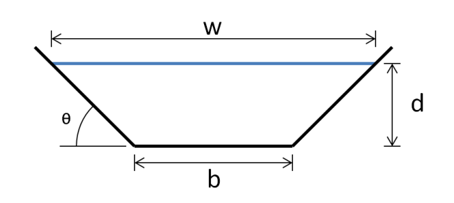

x = sqrt(2)
y = 4242
The Google calculator has a button Ans to refer to the answer to the previous evaluation. This is a form of memory. The last answer is stored in a specific place in memory for retrieval when Ans is used. In some calculators, more advanced memory features are possible. For some, it is possible to push values onto a stack of values for them to be referred to at a later time. This proves useful for complicated expressions, say, as the expression can be broken into smaller intermediate steps to be computed. These values can then be appropriately combined. This strategy is a good one, though the memory buttons can make its implementation a bit cumbersome.
With Julia, as with other programming languages, it is very easy to refer to past evaluations. This is done by assignment whereby a computed value stored in memory is associated with a name (sometimes thought of as symbol or label). The name can be used to look up the value later. Assignment does not change the value of the object being assigned, it only introduces a reference to it.
Assignment in Julia is handled by the equals sign and takes the general form variable_name = value. For example, here we assign values to the variables x and y
x = sqrt(2)
y = 4242In an assignment, the right hand side is always returned, so it appears nothing has happened. However, the values are there, as can be checked by typing their name
x1.4142135623730951Just typing a variable name (without a trailing semicolon) causes the assigned value to be displayed.
Variable names can be reused (or reassigned), as here, where we redefine x:
x = 22The Pluto interface for Julia is idiosyncratic, as variables are reactive. This interface allows changes to a variable x to propagate to all other cells referring to x. Consequently, the variable name can only be assigned once per notebook unless the name is in some other namespace, which can be arranged by including the assignment inside a function or a let block.
Julia is referred to as a “dynamic language” which means (in most cases) that a variable can be reassigned with a value of a different type, as we did with x where first it was assigned to a floating point value then to an integer value. (Though we meet some cases - generic functions - where Julia balks at reassigning a variable if the type is different.)
More importantly than displaying a value, is the use of variables to build up more complicated expressions. For example, to compute
\[ \frac{1 + 2 \cdot 3^4}{5 - 6/7} \]
we might break it into the grouped pieces implied by the mathematical notation:
top = 1 + 2*3^4
bottom = 5 - 6/7
top/bottom39.34482758620689Imagine we have the following complicated expression related to the trajectory of a projectile with wind resistance:
\[ \left(\frac{g}{k v_0\cos(\theta)} + \tan(\theta) \right) t + \frac{g}{k^2}\ln\left(1 - \frac{k}{v_0\cos(\theta)} t \right) \]
Here \(g\) is the gravitational constant \(9.8\) and \(v_0\), \(\theta\) and \(k\) parameters, which we take to be \(200\), \(45\) degrees, and \(1/2\) respectively. With these values, the above expression can be computed when \(t=100\):
g = 9.8
v0 = 200
theta = 45
k = 1/2
t = 100
a = v0 * cosd(theta)
(g/(k*a) + tand(theta))* t + (g/k^2) * log(1 - (k/a)*t)96.75771791632161By defining a new variable a to represent a value that is repeated a few times in the expression, the last command is greatly simplified. Doing so makes it much easier to check for accuracy against the expression to compute.
A common expression in mathematics is a polynomial expression, for example \(-16s^2 + 32s - 12\). Translating this to Julia at \(s =3\) we might have:
s = 3
-16*s^2 + 32*s - 12-60This looks nearly identical to the mathematical expression, but we inserted * to indicate multiplication between the constant and the variable. In fact, this step is not needed as Julia allows numeric literals to have an implied multiplication:
-16s^2 + 32s - 12-60A grass swale is a design to manage surface water flow resulting from a storm. Swales detain, filter, and infiltrate runoff limiting erosion in the process.

There are a few mathematical formula that describe the characteristics of swale:
The area is given by:
\[ A = (b + d/\tan(\theta)) d \]
The wetted perimeter is given by
\[ P = b + 2 d/\sin(\theta) \]
The hydraulic radius is given by
\[ R = \frac{b\cdot d \sin(\theta) + d^2 \cos(\theta)}{b\sin(\theta) + 2d}. \]
Finally, the flow quantity is given by Manning’s formula:
\[ Q = vA = \frac{R^{2/3} S^{1/2}}{n} A, \quad R = \frac{A}{P}. \]
With \(n\) being Manning’s coefficient, \(v\) the velocity in meters per second, and \(S\) being the slope. Velocity and slope are correlated.
Manning’s coefficient depends on the height of the vegetation in the grass swale. It is \(0.025\) when the depth of flow is similar to the vegetation height.
Given all this, compute the flow quantity when \(S = 2/90\) and \(n=0.025\) for a swale with characteristics \(b=1\), \(\theta=\pi/4\), \(d=1\).
b, theta, d = 1, pi/4, 1
n, S = 0.025, 2/90
A = (b + d/tan(theta)) * d
P = b + 2d/sin(theta)
R = A / P
Q = R^(2/3) * S^(1/2) / n * A7.735531117524471It is important to recognize that = to Julia is not in analogy to how \(=\) is used in mathematical notation. The following Julia code is not an equation:
x = 3
x = x^29What happens instead? The right hand side is evaluated (x is squared), the result is stored and bound to the variable x (so that x will end up pointing to the new value, 9, and not the original one, 3); finally the value computed on the right-hand side is returned and in this case displayed, as there is no trailing semicolon to suppress the output.
This is completely unlike the mathematical equation \(x = x^2\) which is typically solved for values of \(x\) that satisfy the equation (\(0\) and \(1\)).
Having = as assignment is usefully exploited when modeling sequences. For example, an application of Newton’s method might end up with this mathematical expression:
\[ x_{i+1} = x_i - \frac{x_i^2 - 2}{2x_i} \]
As a mathematical expression, for each \(i\) this defines a new value for \(x_{i+1}\) in terms of a known value \(x_i\). This can be used to recursively generate a sequence, provided some starting point is known, such as \(x_0 = 2\).
The above might be written instead using assignment with:
x = 2
x = x - (x^2 - 2) / (2x)
x = x - (x^2 - 2) / (2x)1.4166666666666667Repeating this last line will generate new values of x based on the previous one - no need for subscripts. This is exactly what the mathematical notation indicates is to be done.
The distinction between = versus = is important and one area where common math notation and common computer notation diverge. The mathematical = indicates equality, and is often used with equations and also for assignment. Later, when symbolic math is introduced, the ~ symbol will be used to indicate an equation, though this is by convention and not part of base Julia. The computer syntax use of = is for assignment and re-assignment. Equality is tested with == and ===.
The binding of a value to a variable name happens within some context. When a variable is assigned or referenced, the scope of the variable – the region of code where it is accessible – is taken into consideration.
For our simple illustrations, we are assigning values, as though they were typed at the command line. This stores the binding in the Main module. Julia looks for variables in this module when it encounters an expression and the value is substituted. Other uses, such as when variables are defined within a function, involve different contexts which may not be visible within the Main module.
The varinfo function will list the variables currently defined in the main workspace. There is no mechanism to delete a single variable.
Shooting oneselves in the foot. Julia allows us to locally redefine variables that are built in, such as the value for pi or the function object assigned to sin. This is called shadowing. For example, this is a perfectly valid command x + y = 3. However, it doesn’t specify an equation, rather it redefines addition. At the terminal, this binding to + occurs in the Main module. This shadows that value of + bound in the Base module. Even if redefined in Main, the value in base can be used by fully qualifying the name, as in Base.:+(2, 3). This uses the notation module_name.variable_name to look up a binding in a module.
Julia has a very wide set of possible names for variables. Variables are case sensitive and their names can include many Unicode characters. Names must begin with a letter or an appropriate Unicode value (but not a number). There are some reserved words, such as try or else which can not be assigned to. However, many built-in names can be locally overwritten (shadowed).
Conventionally, variable names are lower case. For compound names, it is not unusual to see them squished together, joined with underscores, or written in camelCase.
value_1 = 1
a_long_winded_variable_name = 2
sinOfX = sind(45)
__private = 2 # a convention2Julia allows variable names to use Unicode identifiers. Such names allow julia notation to mirror that of many mathematical texts. For example, in calculus the variable \(\epsilon\) is often used to represent some small number. We can assign to a symbol that looks like \(\epsilon\) using Julia’s LaTeX input mode. Typing \epsilon[tab] will replace the text with the symbol within IJulia or the command line.
ϵ = 1e-101.0e-10Entering Unicode names follows the pattern of “backslash” + LaTeX name + [tab] key. Some other ones that are useful are \delta[tab], \alpha[tab], and \beta[tab], though there are hundreds of other values defined.
For example, we could have defined theta (\theta[tab]) and v0 (v\_0[tab]) using Unicode to make them match more closely the typeset math:
θ = 45; v₀ = 200200There is even support for tab-completion of emojis such as \:snowman:[tab] or \:koala:[tab]
These notes often use Unicode alternatives for some variable. Originally this was to avoid a requirement of Pluto of a single use of assigning to a variable name in a notebook without placing the assignment in a let block or a function body. Now, they are just for clarity through distinction.
As mentioned the value of \(e\) is bound to the Unicode value \euler[tab] and not the letter e, so Unicode entry is required to access this constant. This isn’t quite true. The MathConstants module defines e, as well as a few other values accessed via Unicode. When the CalculusWithJulia package is loaded, as will often be done in these notes, a value of exp(1) is assigned to e.
It is a common task to define more than one variable. Multiple definitions can be done in one line, using semicolons to break up the commands, as with:
a = 1; b = 2; c=33For convenience, Julia allows an alternate means to define more than one variable at a time. The syntax is similar:
a, b, c = 1, 2, 3
b2This sets a=1, b=2, and c=3, as suggested. This construct relies on tuple destructuring. The expression on the right hand side forms a tuple of values. A tuple is a container for different types of values, and in this case the tuple has 3 values. When the same number of variables match on the left-hand side as those in the container on the right, the names are assigned one by one.
The value on the right hand side is evaluated, then the assignment occurs. The following exploits this to swap the values assigned to a and b:
a, b = 1, 2
a, b = b, a(2, 1)Find the slope of the line connecting the points \((1,2)\) and \((4,6)\). We begin by defining the values and then applying the slope formula:
x0, y0 = 1, 2
x1, y1 = 4, 6
m = (y1 - y0) / (x1 - x0)1.3333333333333333Of course, this could be computed directly with (6-2) / (4-1), but by using familiar names for the values we can be certain we apply the formula properly.
Let \(a=10\), \(b=2.3\), and \(c=8\). Find the value of \((a-b)/(a-c)\).
Let x = 4. Compute \(y=100 - 2x - x^2\). What is the value:
What is the answer to this computation?
a = 3.2; b=2.3
a^b - b^aFor longer computations, it can be convenient to do them in parts, as this makes it easier to check for mistakes.
For example, to compute
\[ \frac{p - q}{\sqrt{p(1-p)}} \]
for \(p=0.25\) and \(q=0.2\) we might do:
p, q = 0.25, 0.2
top = p - q
bottom = sqrt(p*(1-p))
ans = top/bottomWhat is the result of the above?
Using variables to record the top and the bottom of the expression, compute the following for \(x=3\):
\[ y = \frac{x^2 - 2x - 8}{x^2 - 9x - 20}. \]
Which if these is not a valid variable name (identifier) in Julia:
Which of these symbols is one of Julia’s built-in math constants?
What key sequence will produce this assignment
δ = 1/10Which of these three statements will not be a valid way to assign three variables at once:
The fact that assignment always returns the value of the right hand side and the fact that the = sign associates from right to left means that the following idiom:
x = y = z = 3Will always: